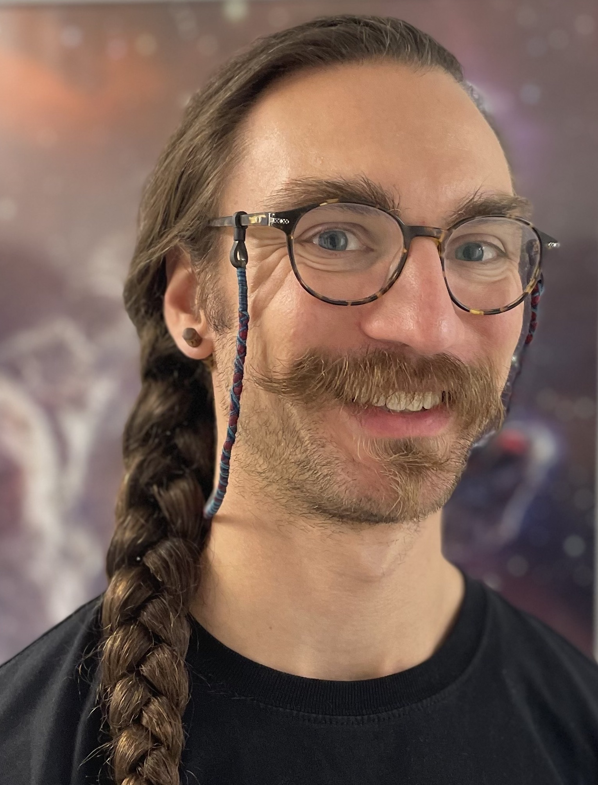
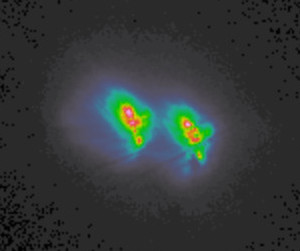

About Me

Education:
MSc Astronomy San Diego State University
BSc Astronomy & Astrophysics Pennsylvania State University
Research Interests: Binary stars are the best laboratories to test current theories and make new discoveries. My interests include orbital dynamics, (heavy element) nucleosynthesis, stellar evolution, and everything in between! I also find galactic archeology and stellar populations very interesting.
Publications:
Modeling Apsidal Motion in Eclipsing Binaries Using ELC
Research

S-Process Nucleosynthesis in Chemically Peculiar Binaries
PhD work at MPIA / Göthe University of Frankfurt with Prof. Dr. Camilla Hansen and Dr. Richard Stancliffe. Spectroscpic studies of binary stars measuring orbital motion and heavy element abundances in stellar photospheres.
Work presented at:
ChETEC-INFRA 2nd General Assembly in Padova Italy
School for Nuclear Astrophysics at CERN in Geneva Switzerland
Stellar Spectroscopic Workshop at Ondrejov Observatory in Czech Republic
18th Rußbach School for Nuclear Astrophysics in Rußbach am Paß Geschütt Austria
Apsidal Motion in Eclipsing Binaries
MSc work from San Diego State University (and beyond): Numerical modeling of photometric binary orbits using the ELC code to investigate the internal structures of stars.
Modeling Apsidal Motion in Eclipsing Binaries Using ELC
Contact
Email: adimoff4@gmail.com, dimoff@mpia.de
Address: Heidelberg, Germany